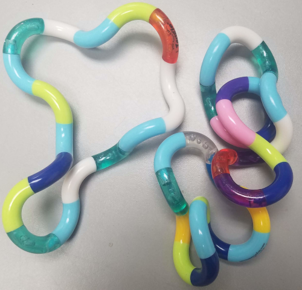

A Tangle is a $C^1$ space curve formed by the union of quarter-circles with the same radius.

Theorem (Prowell, T.)
One-to-one correspondence between $n$-Tangles and sequences of vectors $\mathbf v_0,\ldots,\mathbf v_{n-1}\in\mathbb R^3$ satisfying
System of homogeneous polynomial equations in $3n + 1$ variables $\implies$ "Tangle variety" in $\mathbb P^{3n}$
Assume $r = 1$, $\mathbf v_0 = \mathbf i$, and $\mathbf v_1 = \mathbf j$.
Now in $\mathbb A^{3n -6}$.
Software system for research in algebraic geometry and commutative algebra.
i3 : affineTangleVariety 4
o3 = ideal (v , v + 1, v , v , v , v + 1)
3,2 3,1 3,0 2,2 2,1 2,0
o3 : Ideal of QQ[v ..v ]
2,0 3,2
$\implies \mathbf v_2 = -\mathbf i$ and $\mathbf v_3 = -\mathbf j$ (circle!)
i4 : affineTangleVariety 5
o4 = ideal 1
o4 : Ideal of QQ[v ..v ]
2,0 4,2
i6 : betti affineTangleVariety 6
0 1
o6 = total: 1 16
0: 1 6
1: . 7
2: . 3
o6 : BettiTally
i10 : dim \ minimalPrimes affineTangleVariety 6
o10 = {1, 0, 0, 0}
o10 : List
1 curve, 3 points
i12 : last minimalPrimes affineTangleVariety 6
o12 = ideal (v + 2, v , v + 2v , v - 3, v + 2, v - 2v , v + 2, v - 3, v + v ,
5,1 5,0 4,2 5,2 4,1 4,0 3,2 5,2 3,1 3,0 2,2 5,2
------------------------------------------------------------------------------------------------------------
2
v , v + 2, v + 3)
2,1 2,0 5,2
o12 : Ideal of QQ[v ..v ]
2,0 5,2
Reflections of one another
$\|\mathbf v_2\| = 1$ and $\mathbf j\cdot\mathbf v_2 = 0$ $\implies$
$\mathbf v_2=\langle\cos\theta, 0,\sin\theta\rangle$
$\theta = \frac{\pi}{2}, \frac{3\pi}{4}, \pi$